Do the geometric constructions and develop patterns.
Read and listen
The voice reads the key points slowly. Pause any time.
- Geometric constructionsDivide a line into equal spaces. Erect a perpendicular. Bisect an arc. Find the centre of a circle. Draw an arc tangent to two lines.
- Circle into 12Dividing a circle into 12 equal spaces gives the 12 element lines of a pattern.
- Parallel line developmentUsed for prisms and cylinders: truncated prism, truncated cylinder, tees, laterals, wyes, elbows.
- Patterns in the course90 degree tee, 45 degree lateral, offset laterals, 60 degree wye, 3 piece 90 degree elbow, eccentric branch.
- Numbers for patternsThe Intake 140 study guide lesson 10 calculates the element lengths with the calculator.
More study material
Games
Pictures come straight from the course documents. Questions come from the course answer keys and safe work procedures. Each one names its source.
Loading…
Loading…
Loading…
Loading…
Loading…
Loading…
Pictures from the course
159 pictures. Open a document to see them. Tap a picture to make it bigger.
3 piece 90 elbow cw branch student (1)

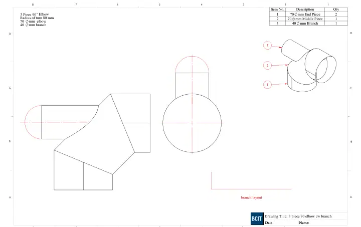
3 piece 90 elbow student (1)

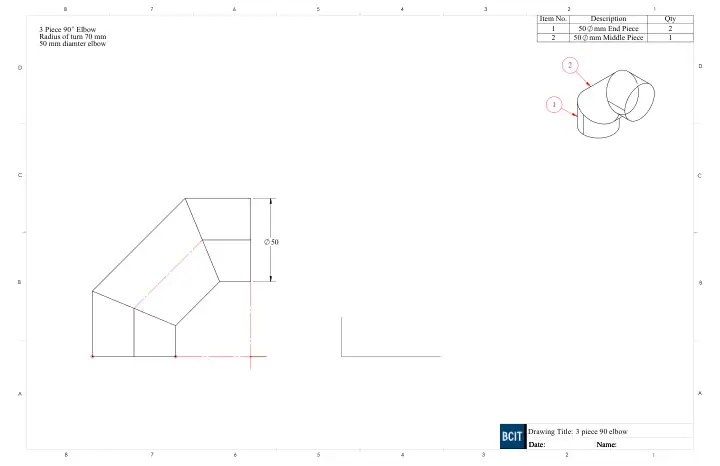
BCIT Parallel Line Development Module (70)

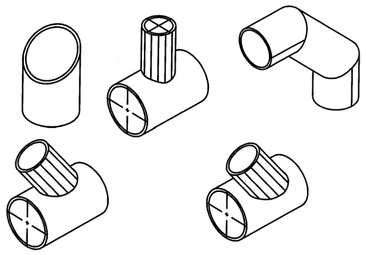

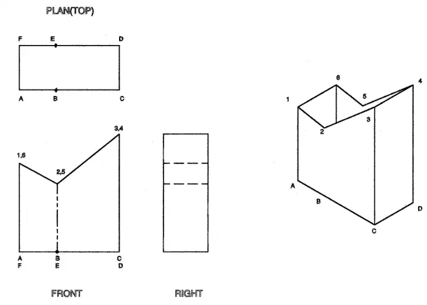

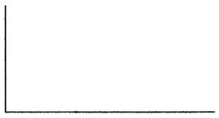

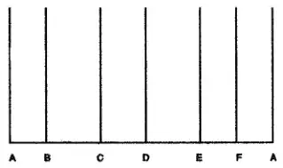

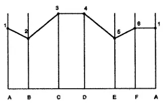

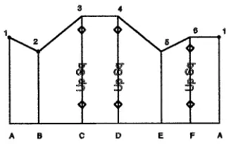

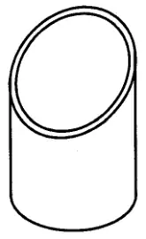

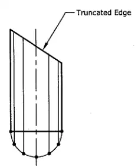

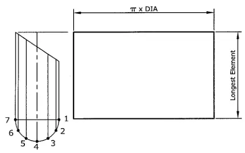

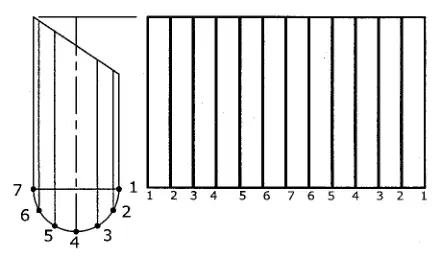

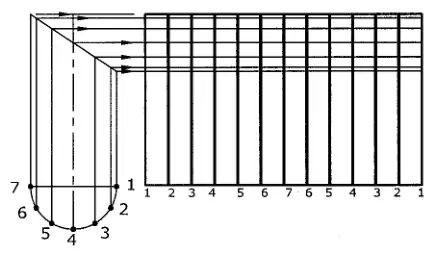

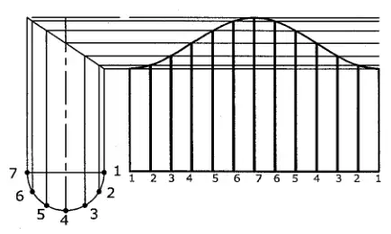

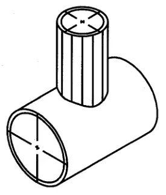

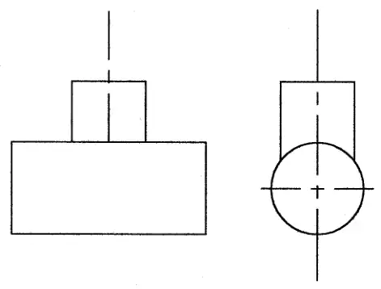

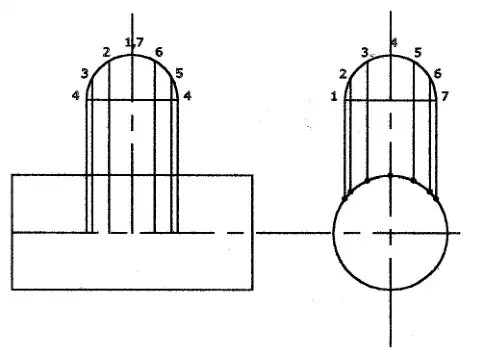

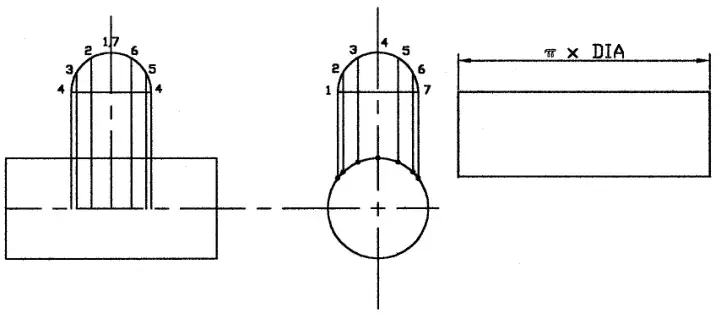

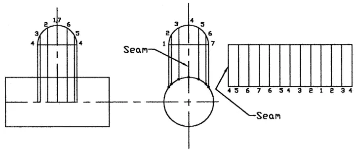

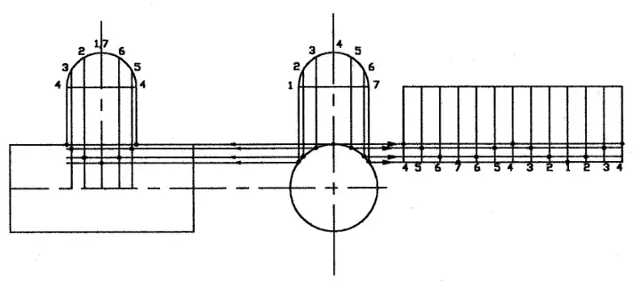

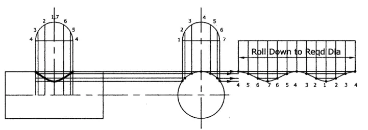

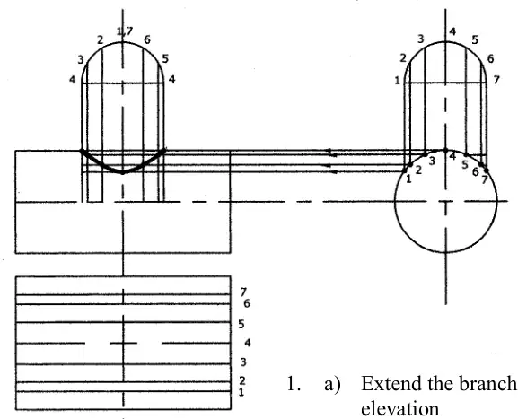

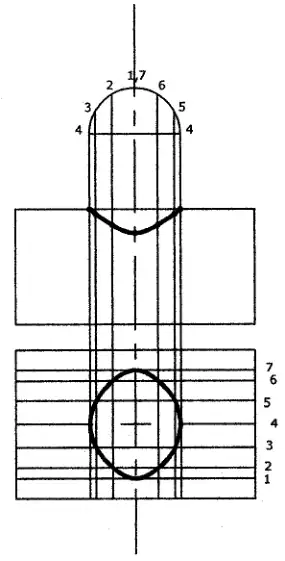

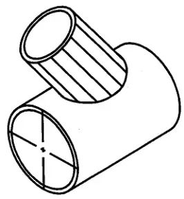

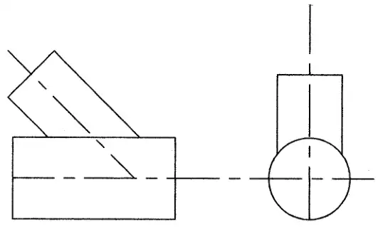

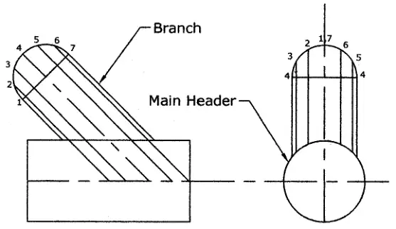

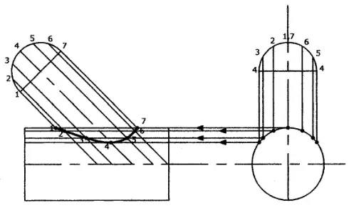

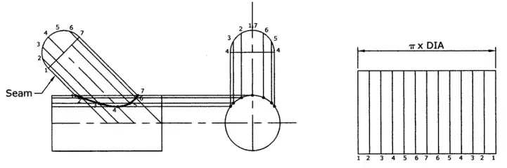

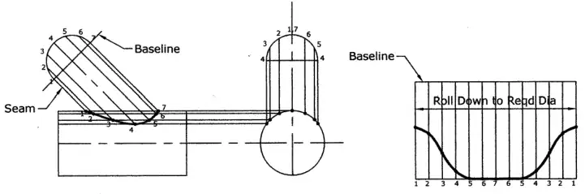

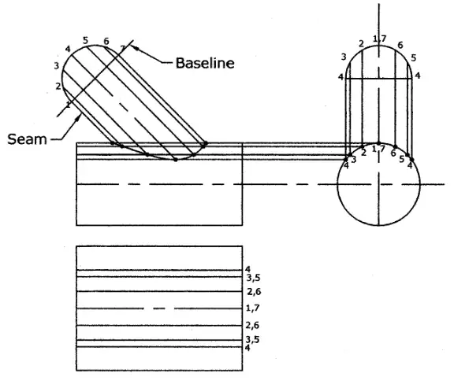

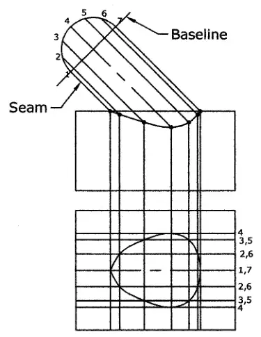

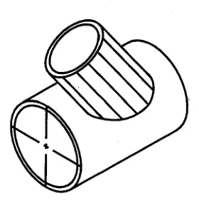

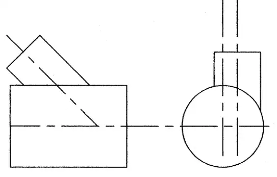

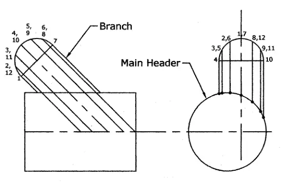

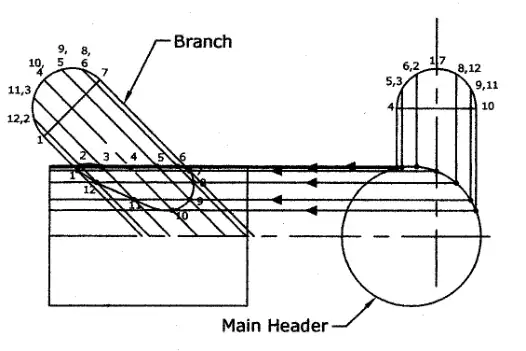

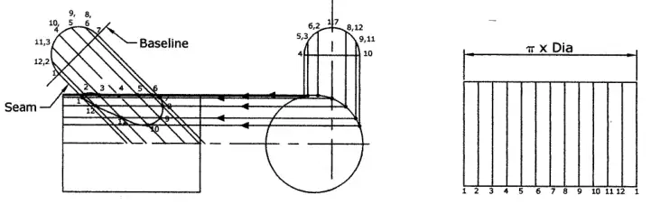

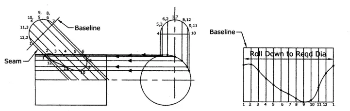

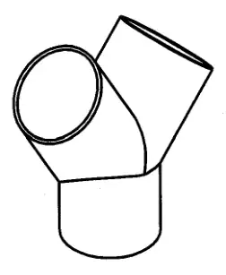

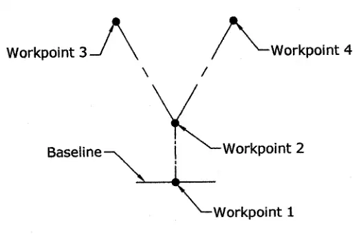

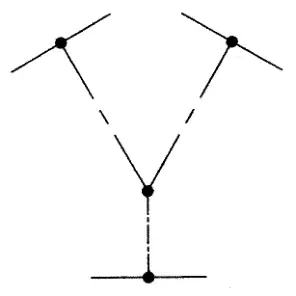

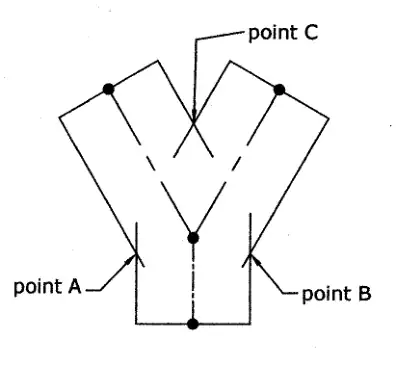

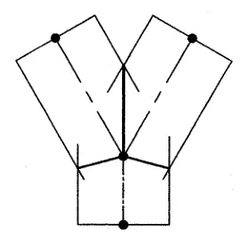

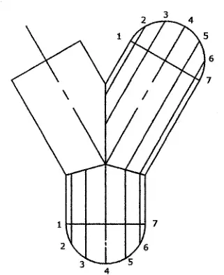

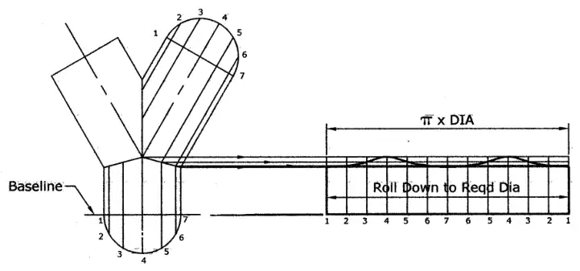

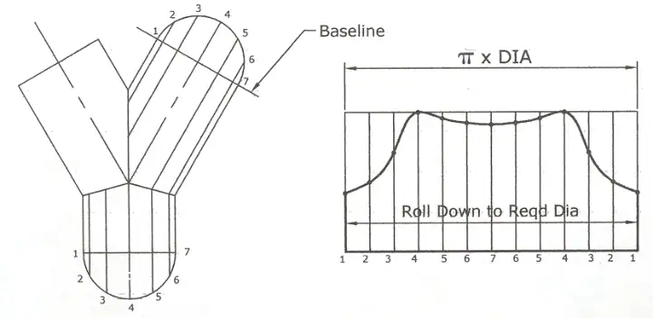

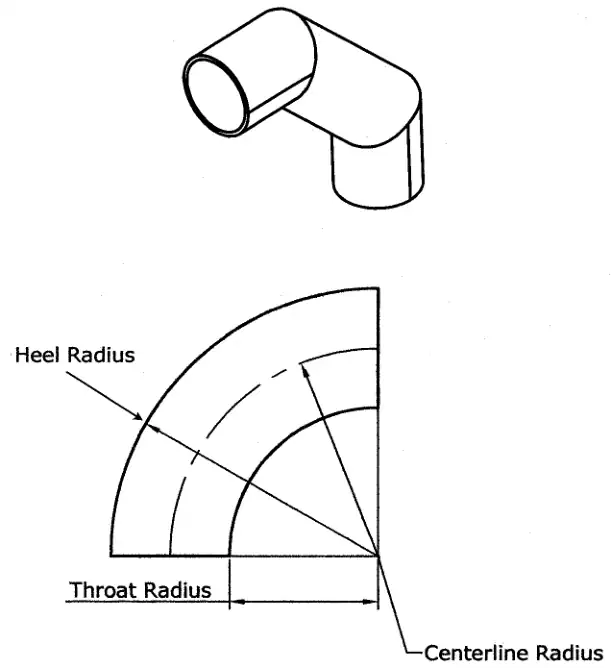

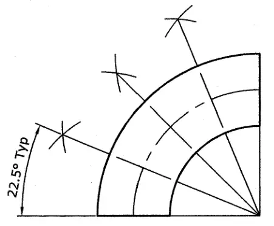

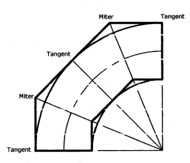


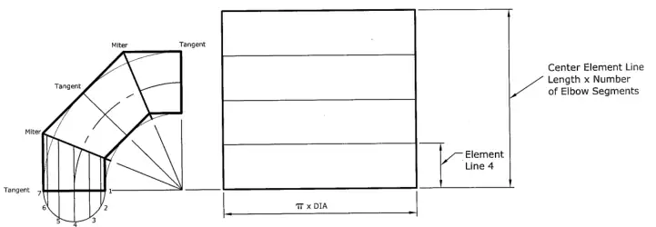

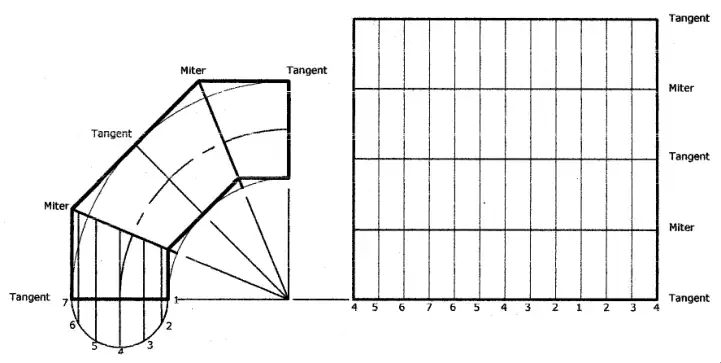


STEL FAB LEVEL 1 LEARN GUIDE (JULY 2009) 10033401 (77)


Documents in this module
- F_Line_Development/3 piece 90 elbow cw branch fish student.PDF 1 pages
- F_Line_Development/3 piece 90 elbow cw branch student.PDF 1 pages, 1 pictures
- F_Line_Development/3 piece 90 elbow student.PDF 1 pages, 1 pictures
- F_Line_Development/45 Lateral Branch on Center student1.PDF 1 pages
- F_Line_Development/45 degree Offset Lateral Branch Student1.PDF 1 pages
- F_Line_Development/60 Degree Wye Branch Student.PDF 1 pages
- F_Line_Development/90 degree Eccentric Branch student.PDF 1 pages
- F_Line_Development/90 degree Tee Branch student2.PDF 1 pages
- F_Line_Development/BCIT Parallel Line Development Module.pdf 34 pages, 70 pictures
- F_Line_Development/Circle Divided into 12 Equal Spaces.pdf 1 pages, 1 pictures
- F_Line_Development/Circle Divided into 12 or 16 Equal Spaces.pdf 1 pages
- F_Line_Development/Divide a Given Line into 8 Equal Spaces.pdf 2 pages, 3 pictures
- F_Line_Development/Draw an Arc Tangent to Two Straight Lines at a Given Radius.pdf 1 pages
- F_Line_Development/Geometric line construction complete.PDF 5 pages
- F_Line_Development/Truncated Cylinder 22.5 deg student1.PDF 1 pages
- F_Line_Development/Truncated Rectangular Prism student.PDF 1 pages
- F_Line_Development/Upon a straight line strike equal angle.pdf 1 pages, 1 pictures
- F_Line_Development/construct a circle or arc through three points.pdf 1 pages, 4 pictures
- F_Line_Development/erect a perp end of line.pdf 1 pages, 1 pictures